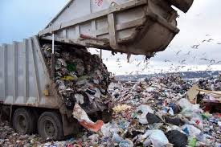
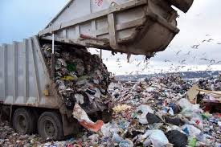

1. Donate Clothes
Believe it or not, the throwing away of clothing is one of the biggest contributions we make to landfills today. We open up our closets; pick clothes that no longer need like a sweater that was fashionable last year, a ripped shirt, or some clothes that we just don’t want to keep any more. And where does it go? That’s right, to the garbage, and from there, to the landfill.
Instead of throwing away these old clothes, make better use out of it. First, make sure that these are clothes that you absolutely don’t need any more. Then, donate clothes to people in need or to Goodwill stores, or hold a sale in your garage (though assuming the clothes are still wearable, of course). You know what they say, another man’s trash is another man’s pleasure.
2. Reduce Food Waste
Food is another item that we often just carelessly toss away without thinking twice about it. Each year, a very large percentage of our purchased food is left uneaten. Instead of simply throwing away food, make good use out of it. Even if we kept just a small percentage of our uneaten food and donated it, millions of needy people would be fed.
3. Eat Healthy
Also think about eating healthier. Buy healthier foods that don’t require as much disposable waste in the form of packaging. Reuse old shopping bags and containers for maximum efficiency, and better yet, cloth bags. Don’t buy fast food take out as often either.
4. Save Leftovers for Next Day
Don’t forget about leftovers! Too many people are careless enough to throw away half of a good meal and not save it for later. Eating leftovers more often will save on money and result in less food waste. Try making it a habit to save the rest of tonight’s food in the fridge for tomorrow’s lunch or dinner.
5. Buy Things With Less Packaging
You can also stock up on food in the freezer. Buy a bunch of food at the same time and store it in the freezer, and don’t buy any more food until the freezer is empty. In addition, buying food in bulk means less packaging and less waste.
6. Boycott Plastic Water Bottles
Millions of plastic water bottles are thrown away by people every day. Don’t become one of those people. Not only will you save a boat load of money by switching to reusable glass bottles, you will be throwing a lot less empty (and un empty, for that matter) water bottles into the trash, which in turn means you won’t contribute to the mountains of bottles in landfills or (gulp) in the bottom of the ocean.
7. Just Don’t Buy as Much Stuff….Really
Though it’s often quite tempting to buy as much things as money can buy, if you are serious about cutting down on the number of trips you make to the landfill each year, simply buying less stuff will severely cut back on those number of trips all ready. Re-evaluate your priorities. Think about what you need vs. what you want. Also be mindful of what you throw away.
.jpeg)
.jpeg)
.jpeg) 

.jpeg)
.jpeg)